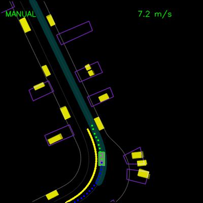
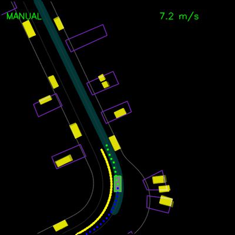

In summer 2018, I worked under the Design Team at Waymo in the Google X building, spending majority of the time designing mobile experiences beyond mockups with animations and video prototypes.
Role: Interaction Designer
Collaboration: N/A
Tools: After Effects, Lottie
Time: 3 months
I worked on many facets of towards the
- Pickup/dropoff visual interaction design
- Boarding screen visual design
- Saved locations visual design
- Search Interaction
- Microinteractions (back button, walking icon)
- Passenger screen concept
Prototyped in videos for a few
 

Collaborated with
Collaborated with the ID team on